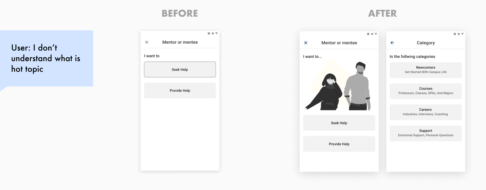

Before diving into actions, I took the time to examine my knowledge of this domain to draft a research plan.
Due to time constraints, I decided to only recruite interviewees from my personal connections. Also, although the stakeholders include student mentorship program staff, new student orientation program officers, I decided to focus only on the experiences of mentors and mentees for this project.
I conducted secondary research and interviewed 4 students who both acted as mentor and mentee, and one staff that is currently in charge of one of the Georgia Tech mentorship program.
I used personas and journey maps to synthesize the research findings in the affinity map, identifying some key pain points and correspondant design opportunity.
And I distilled the key insights from the research as followed
After the research phase, I realized that connecting mentors and mentees is much more important to the experience for both mentors and mentees. So I focused on the connecting part first in my following design processes and then tended to mentee-mentor transition experience
According to the journey map, major ways school can reach the exprienced students are through email. So it would be most convenient that they directly take actions. However, the frustrations mainly appear during the mentorship, and the experience often happen on the go. So I created the diagram to compare different platforms and tradeoffs. Finally, I decided to move on with app.
I came up with 3 concepts as potential solutions, I went back to my interviewees for their thoughts on these concepts, evaluated them with the impact and effort matrix to decide on which direction to move forward with.
I went back to my personas and journey maps to distill tasks users need to achieve within this product, and created storyboards to help me better visualize the use cases.
From the users tasks I distilled I learned there will be 5 major feature in the app. I designed a lot of alternatives to find out the best structure for navigation.
I went back to research and summarized mentors/ mentees’ needs into the following categories, and found them also have other dimensions to browse like major, time, and role(as mentor or mentee). When I try to solve the flexibility pain point, I got trapped in another potential pain point that did not exist before: find the right help to get/ give the right help
I went back to my research again and prompt itself to try to scope down to reduce the types to present. As the prompt was focused on helping new students to adjust to campus life, I decided to cut out “fun”, “interest related”, and “just hang out” categories for now and settled down on a smaller group of information.
I made the following key design decisions and created the wireframe flow.
Create a meetup right after signing up: to initiate the project, ensure the active participation of users, I decided to let users create a meetup or choose to attend one right after they enter the platform.
Break create meetup flow into steps to guide users: giving agency to UGC while controlling the quality is difficult. As any individual can create a meetup as either mentor or mentee, I realize when tackling the pain point of flexibility, a mess is very possible to appear on the platform if users can create meetups of all kinds. So I decided to use steps with very specific instructions on how users would create a meetup to reduce the mess on the platform.
Why recommendations in create meetup flow: as the platform contains both meetups for mentors and mentees to sign up, and I scope down the kinds of meetups that users can create, so it is highly possible that when creating a meetup, say, as a mentor, there would be already a meetup from the mentee’s side requesting the help. So recommendations can help reduce the cluster.
Why discussion for meetups: as my research shows, people are unsure about what to talk about before a mentor/mentee meetup, so discussion before the meetup help reduce the uncertainty and help both parties to prepare for the meetup.
With the whole wireframe flow, I recruited an HCI expert to walk through the wireframes to identify potential issues. Also, I went back again to my interviewee to test the mi-fi prototype. From their feedback, I developed the following iterations.
Iteration 1: Letting useres skip creating meetups flow when signing up
Iteration 2: Adding Search function
Iteration 3: Iteration 3 Making more sense in create meetups flow with clearer copy writing and illustrations

Due to time constraints, I did not spend a lot of time exploring the visual style and systems. As this experience is designed for my school for now, so I simply used Material theming tool to develop Hi-fi prototype that aligns with Georgia tech branding system.
If given more time, I would consider the scalability of the experience (if it is possible to scale the solution to other US campuses), and develop a UI system with better scalability
Although this product might not be launched, but I still thought about ways to measure its success. I recently learned about Google’s two models - HEART and SUPER and found HEART model relevant to measuring and improving this experience. So I drafted the following success measuring plan with the HEART model.
Due to time and effort constraints, I based my solutions on limited/ biased research, and I do not have enough time to thoroughly examine and explore design alternatives. IF given more time, I would develop more structured generative/ evaluative research plans for a better informed design solution
More information on what's important: I used assumptions to prioritize certain catergories of meetups in create flow, time filters, and information to show on the meetup cards/ list items, which need further validation with testing or more research.
Incorporate the design into the whole service picture: In this design solution, I only focused on the design of the digital product, but considered less about the whole picture: how to initiate the feeding of initial users and meetups? How to encourage mentors to commit more time to helping others?
Other stakeholders: As I scoped down the design to only student mentors and mentees, I did not touch a lot on the school, who is a major stakeholder that initiated this project. If time allowed, I would do more research on how would school officials manage and help the experience and make correspondant iterations.